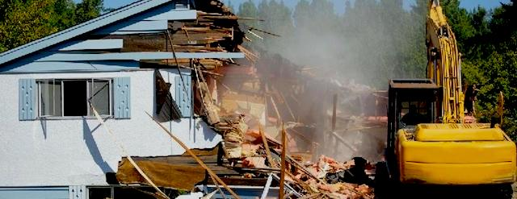

2018-07-08 08:00

Here in Massachusetts we have 38 days to register for the Massachusetts primaries, 58 days until we vote in them, 100 days to register for midterm elections, and 121 days until the fate of nation is sealed. But it’s been over a year and a half since the 2016 presidential election and we feel only the faintest of pulses from a Democratic Party led nationally by septuagenarians older on average than Brezhnev’s Politburo, with few new ideas and little backbone. This is a party desperately in need of major rehabilitation, not the slow-moving suicide in progress.
Despite a progressive insurgency, the DNC and DCCC still can’t bring themselves to give up the Big Money donors and slick top-down campaign machinery they’ve always counted on. Their direction hasn’t changed — today it’s even further to the right with campaigns featuring more veterans, more members of the security establishment, more prosecutors, and more tech wizards and hedge fund managers. Capitalism may not be working for most of the country, but it sure is for these Democrats. When Tammy Duckworth quipped that Alejandra Ocasio-Cortez represents only the Bronx, it spoke volumes about a party unwilling to confront the future, much less the present.
Our last president left the Democratic Party in virtual receivership, according to Donna Brazile. And the losing presidential candidate called in the DNC’s chits to literally turn it into her own presidential campaign. Today the very existence of the Poor People’s Campaign is a symptom of how badly Democrats have represented the working poor — or anyone a paycheck or two from sliding out of the middle class. Yet, while Democrats do little for the average American, Republicans are doing their worst.
In November we again have a choice between truly evil or lesser evil, oligarch or technocrat. We’ve been properly conditioned to always vote for the lesser evil. And the Democratic Party can always count on us. Liberals smugly argue that Conservatives vote against their own interests, but that’s not entirely true. In 2016 White America got exactly what it always wanted — Reconstruction 2.0. Whether trade, taxes, budget, infrastructure, medical care, or even their children’s lives or their own retirement, White America was willing to take any hit to unroll and unwind everything the Black Guy had tried to accomplish. Last year the Democratic Party leadership traveled down to Berryville, Virginia to specifically court the white middle class. We should all be watching midterm results in Berryville to see how this works out for them.
Liberals won’t admit that they also vote against their own interests by supporting massive military budgets, corporate bailouts, and helping dismantle the social safety net. And centrist Democrats apparently love trickle-down economics every bit as much as their kleptocratic Republican brethren. The “Better Deal” that Democrats announced in Berryville focuses on “pocketbook” issues and, just like Republicans, claims that what’s good for America’s corporations is also good for America’s workers. But progressives take issue with this neoliberal fable, increasingly questioning not only income inequality but the Capitalism behind it.
Each year, those of us who recall — that the Democratic Party was the party of the Bay of Pigs, Viet Nam, the largest increase in federal and state prison inmates in American history. carte blanche for the Patriot Act, Libya, Syria, Drone Tuesdays, and the biggest corporate bailout since the Great Depression — each year we remind centrist Democrats they’ve been hoodwinked. And each year they call us irresponsible dogmatists. But history and newspaper clippings don’t do them any favors.
Some things simply have to be abandoned and created anew. In software refactoring only gets you so far: sometimes you need a complete rewrite of the code. With a dumpy old house, add-ons and endless tinkering with electrical and structural problems often turn out to be more costly than bulldozing and rebuilding. Now, because of widespread dysfunction and corruption, many Democrats have begun to recognize that ICE must be abolished and rebuilt from the ground up. What they don’t see is that the same applies to their own party.